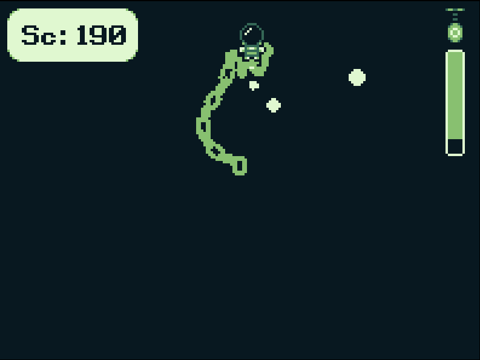
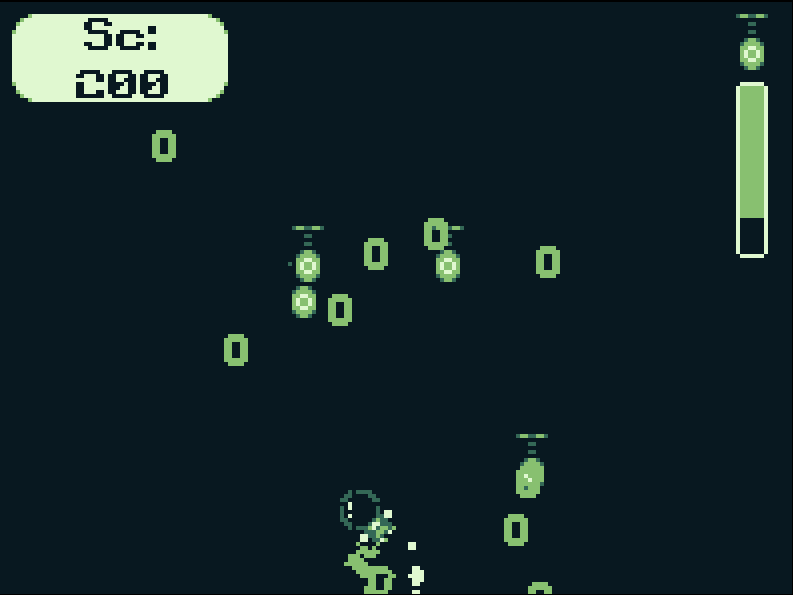
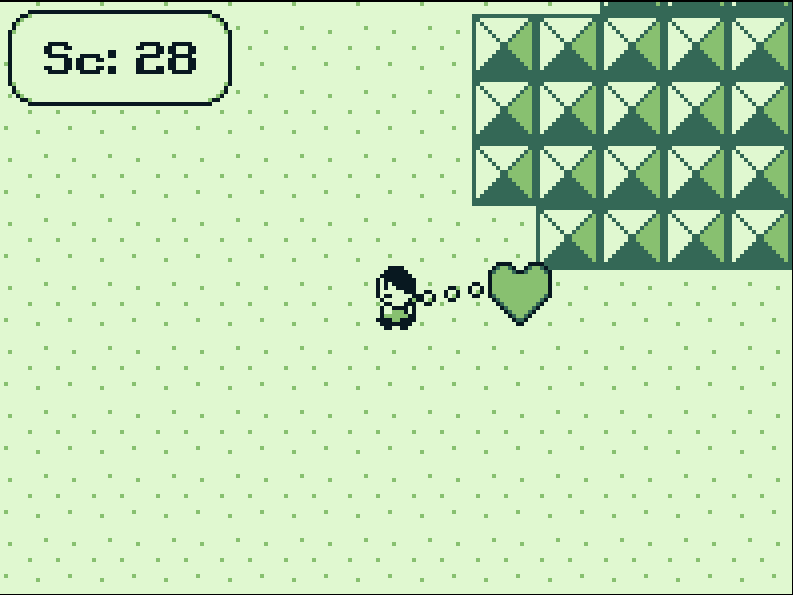
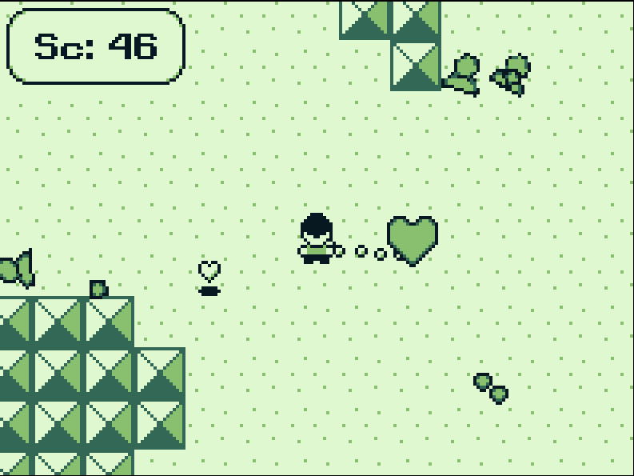

Descubre como la cadena... Se encuentra en todas partes
lanzamiento: 11 de Julio del 2022
Genero: Arcade
Idiomas: Español
Jugadores: 1
Plataformas: Windows, HTML
<a href="https://dream-dog.itch.io/chains-is-in-everyware">Chains is in everywhere by Dream Dog</a>
Capturas de pantalla



